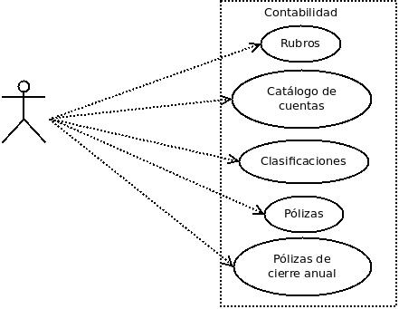
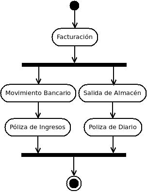

|
El departamento de contabilidad del CEF permite a grandes rasgos definir el catálogo contable de la empresa, agregar pólizas directamente, definir los rubros de las cuentas contables para los reportes financieros y generar la póliza de cierre anual. Esto lo hace a través de los módulos de Rubros, Catálogo de cuentas, Pólizas y Póliza de cierre anual.

Figura 5.2.1.1, Departamento de contabilidad y su interacción con el usuario.
El departamento contable es la base de todos los demás departamentos, y aunque este se puede modificar directamente a través de las pólizas, es conveniente modificarlo a través de los distintos departamentos de Forseti para tener así todos los auxiliares dentro del sistema. La gran ventaja de Forseti es precisamente su poder de asociar a la contabilidad los distintos procesos que intervienen en un negocio sin tener que hacer doble trabajo. Solamente un contador y/o personas autorizadas deberían tener acceso a este módulo para modificarlo, ya que si cualquiera tiene acceso puede generar pólizas o cambiar rubros que afecten drásticamente los estados financieros, lo cual puede ser un problema difícil de identificar. Por este motivo, y aunque el objetivo principal de este manual es cómo utilizar el sistema contable de Forseti, procuramos también dar una idea bastante generalizada de lo que es la contabilidad para aquellos usuarios que nunca han tenido un acercamiento a esta.
Catálogo de cuentas.
El catálogo de cuentas es la base de cualquier contabilidad en una empresa. Este contiene cuentas que se asocian a una actividad o entidad en la empresa, habrá cuentas que se usen en todas las empresas y otras que sean características de cierto tipo de negocios. Es necesario clasificar por grupos conformados por ventas, compras, cobros, pagos, traspasos, etc. a fin de dirigirla al sitio en que deben quedar almacenados los datos que contiene. A las cuentas que forman la memoria de este organismo administrativo las conocemos precisamente como catálogo de cuentas y por lo regular vienen definidos en esquemas de árbol donde a la raíz se le denomina cuenta de Mayor, a cada nodo cuenta Acumulativa y a cada ramificación cuenta de Detalle. Cuando una empresa alcanza un cierto grado de desarrollo, es absolutamente indispensable formar una lista de las cuentas que deberían utilizarse, evitando así errores de aplicación, y asignar a cada una su clave que la identifique, por ejemplo, podrías tener la siguiente cuenta en tu catálogo: 1101-001 - "Bancomer Cta 044756891". Esta puede ser asociada a la actividad de tus movimientos bancarios. Cada movimiento de depósito o retiro de tu cuenta de Bancomer, se asociará a la cuenta con clave 1101-001 del catálogo de la empresa. Por otra parte, suponiendo que un retiro de Bancomer fue realizado para pagar el teléfono de tu empresa, este teléfono debería también especificarse en el catálogo. Vamos a suponer que le asignamos la cuenta 5101-001 - "Teléfono de oficina". Estas cuentas son específicas de dos entidades o actividades, "Bancomer Cta 044756891" y "Teléfono de oficina" . Ahora supongamos que tenemos otra cuenta bancaria y otro teléfono, entonces los podríamos asociar a las siguientes cuentas contables: 1101-002 - "Banamex Cta 365211023" y 5101-002 - "Teléfono celular". Todas estas cuentas al ser asociadas a entidades o actividades específicas se les denomina cuentas de detalle.
Como ya se mencionó, existen también las llamadas cuentas concentradoras de Mayor y Acumulativas, las cuales no se asocian a entidades o actividades específicas, sino que concentran cuentas similares, un ejemplo puede ser el siguiente: 1101-000 - "Bancos" y 5101-000 - "Teléfonos". Aquí, la cuenta 1101-000 y 5101-000 están concentrando los saldos de las cuentas 1101-001 mas 1101-002 y 5101-001 mas 5101-002 respectivamente. Las cuentas de detalle también son llamadas subcuentas de la cuenta que las concentra. El ejemplo anterior podría verse de la siguiente manera en un catálogo:
1101-000 Bancos
1101-001 Bancomer Cta 044756891
1101-002 Banamex Cta 365211023
5101-000 Teléfonos
5101-001 Teléfono de oficina
5101-002 Teléfono celular
Los primeros cuatro dígitos de la clave pertenecen a la cuenta de Mayor que en este caso serían Bancos y Teléfonos señaladas en negritas. Las cuentas de Mayor en Forseti siempre serán concentradoras y nunca de detalle. Las cuentas de mayor pertenecen al primer nivel del catálogo, esto quiere decir que un catálogo en forseti, debe contener por lo menos dos niveles de cuenta. Para dejar esto mas claro, veamos que nuestro catálogo se compone por claves de cuatro dígitos, seguidos por un guión y terminando por tres dígitos mas, los cuales componen el segundo nivel. En este segundo nivel ya podemos tener cuentas de detalle. Ahora analicemos el siguiente catálogo:
1101-000-000 Bancos y Cajas
1101-001-000 Bancos
1101-001-001 Bancomer Cta 044756891
1101-001-002 Banamex Cta 365211023
1101-002-000 Cajas
1101-002-001 Caja tienda Veracruz
1101-002-002 Caja tienda México
5101-000-000 Teléfonos
5101-001-000 Teléfono de oficina
5101-002-000 Teléfono celular
Este catálogo ya contiene tres niveles de cuentas, a diferencia del catálogo anterior, aquí la cuenta de Mayor ya no es la de Bancos, sino la de "Bancos y Cajas" que concentrarán los bancos y las cajas juntas, mientras que las cuentas acumulativas de "Bancos" y "Cajas" señaladas también en negritas, han pasado a pertenecer al segundo nivel y sus cuentas respectivas de detalle al tercer nivel. La cuenta de Teléfonos sigue siendo de Mayor concentrando cuentas de detalle de segundo nivel.
Forseti permite hasta seis niveles de cuenta, el primero es la raíz del árbol y está reservado exclusivamente para las cuentas concentradoras de Mayor, y los subsecuentes para las cuentas de detalle y/o concentradoras acumulativas excepto el último nivel en el cual no se permite tener cuentas acumulativas ya que como no existe otro nivel mas, no habría nada para acumular . El catálogo permite un total de hasta 10,000 cuentas de Mayor que van de la 0000 a la 9999 y en cada una de ellas permite agregar 999 cuentas concentradoras acumulativas y/o de detalle que van de la 001 a la 999 por cada uno de los niveles restantes en que se defina el catálogo.
Según se defina cuantos niveles de cuentas contendrá el catálogo, la clave será distinta, esto significa que mientras el sistema se configure con más niveles, la clave de cada cuenta será mayor, por ejemplo, si nuestro sistema estuviera configurado para aceptar los seis niveles de cuenta, nuestra clave de mayor de Teléfonos sería la 5101-000-000-000-000-000, la de detalle de Teléfono de oficina la 5101-001-000-000-000-000 y así en todas las cuentas. Nota: Esto no significa que se tenga que teclear toda la clave ya que Forseti maneja mecanismos que identifica la cuenta que deseas.
Las claves en forseti se componen únicamente por números y nunca por letras o letras y números. Un ejemplo de claves erróneas serían las siguientes: AAAA-001, A001-000-000, AAAA-AAB-AAA, 101A-001-002-000.
El siguiente es un ejemplo mas formal de un catálogo de cuentas:
1101-000-000-000
|
CAJAS
|
| 1101-001-000-000 | CAJA TLALNEPANTLA | | 1101-002-000-000 | CAJA ARAGÓN | | 1101-003-000-000 | CAJA OJO_AGUA | | 1101-004-000-000 | CAJA VERACRUZ | |
1102-000-000-000
|
BANCOS
| | 1102-001-000-000 | BANAMEX CTA Nº 8411191-7 | | 1102-002-000-000 | BANAMEX CTA Nº 8422246-4 | | 1102-003-000-000 | BBV CTA 110218-2 | | 1102-004-000-000 | BMX N-0574959 DOLAR | |
1103-000-000-000
|
CLIENTES
| |
1103-001-000-000
|
CLIENTES TLALNEPANTLA
| | 1103-001-011-000 | PLÁSTICOS Y DERIVADOS SA DE CV
| | 1103-001-012-000 | ESPECIALIDADES EPÓXICAS E INDUSTRIALES SA DE CV | | 1103-001-013-000 | LIC FERNANDO FEMAT RODRÍGUEZ | | 1103-001-014-000 | JORGE GUSTAVO HERNÁNDEZ AYALA | | 1103-001-015-000 | LAMIFIBRAS PLÁSTICAS SA DE CV | | 1103-001-016-000 | ÁLVARO ALBERTO LEO LOZANO | |
1103-002-000-000
|
CLIENTES ARAGÓN
| | 1103-002-031-000 | RESINAS Y COMPLEMENTOS DE MÉXICO SA DE CV | | 1103-002-032-000 | JUAN MANUEL TOLEDO GARCÍA | | 1103-002-033-000 | ANA MARÍA ROMERO HOYOS | | 1103-002-034-000 | YOLANDA RIVAS SANDOVAL | |
1103-003-000-000
|
CLIENTES OJO_AGUA
| | 1103-003-120-000 | PABLO PALOMARES GONZÁLEZ | | 1103-003-121-000 | COMERCIALIZADORA CUANALO HERMANOS SA DE CV | | 1103-003-122-000 | MARÍA DOLORES OLIVA SALAZAR | | 1103-003-123-000 | MARISELA DE JESÚS SALAZAR CASTILLO | | 1103-003-124-000 | ADACAR SA DE CV | | 1103-003-125-000 | SOLEDAD FERNÁNDEZ MEJÍA | |
1103-004-000-000
|
CLIENTES VERACRUZ
| | 1103-004-001-000 | DELGADO GUTÍERREZ DE VELAZCO | | 1103-004-002-000 | ELMA CHÁVEZ RIVAS | | 1103-004-003-000 | JORGE VENTURA AVILES | | 1103-004-004-000 | REINA TRUJILLO JACOME | | 1103-004-005-000 | ADRIANA DEL RIO AMBRÍZ | |
1104-000-000-000
|
DEUDORES DIVERSOS
| | 1104-001-000-000 | M.TERESA FUENTES DE GUTÍERREZ | | 1104-002-000-000 | C.P. FERNANDO MENDEZ C. | | 1104-003-000-000 | VICENTE ORTEGA | | 1104-004-000-000 | LUCIA RODRÍGUEZ | |
1105-000-000-000
|
ANTICIPO DE IMPUESTOS
| | 1105-001-000-000 | IMPUESTO EMPRESARIAL A TASA UNICA (IETU) | | 1105-002-000-000 | IMPUESTO SOBRE DEPÓSITOS EN EFECTIVO 2% | |
1106-000-000-000
|
I.V.A. ACREDITABLE
| | 1106-001-000-000 | I.V.A ACREDITABLE
| |
1107-000-000-000
|
PAGOS ANTICIPADOS
| | 1107-001-000-000 | PAGOS ANTICIPADOS | | 1107-002-000-000 | PRIMAS Y SEGUROS | |
1109-000-000-000
|
INVENTARIO
| |
1109-001-000-000
|
RESINAS
| |
1109-001-001-000
|
RESINAS VIRGEN
| | 1109-001-001-001 | RESINA RG4-D | | 1109-001-001-000 | RESINA FLEXIBLE | | 1109-001-001-050 | RESINA BISFENOLICA | |
1109-001-002-000
|
RESINAS PREACELERADAS
| | 1109-001-002-099 | RESINA RG4-D PREACELERADA | | 1109-001-002-100 | RESINA FLEXIBLE PREACELERADA | | 1109-001-002-101 | RESINA RG4-CP CRISTAL PREACELERADA | |
1109-002-000-000
|
ACELERADORES
| | 1109-002-001-000 | ACELERADOR (GOTERO) | | 1109-002-002-000 | ACELERADOR (1 KG) | | 1109-002-003-000 | ACELERADOR (3.5 KG) | |
1109-004-000-000
|
CATALIZADORES
| | 1109-004-001-000 | CATALIZADOR (GOTERO) | | 1109-004-002-000 | CATALIZADOR (1 KG) | | 1109-004-003-000 | CATALIZADOR (4 KG) | |
1109-007-000-000
|
FIBRAS DE VIDRIO
| |
1109-007-001-000
|
COLCHONETAS
| | 1109-007-001-001 | COLCHONETA DE 1.5 OZ. | | 1109-007-001-002 | COLCHONETA DE 1 OZ
| |
1109-007-002-000
|
FILAMENTOS
| | 1109-007-002-001 | FILAMENTO CORTADO 1/4 PLG | | 1109-007-002-002 | ROVING SGR 2400 (POR BOBINA) | | 1109-007-002-003 | ROVING 6200 | | 1109-007-002-004 | ROVING 2400 IMPORTACIÓN | |
1109-014-000-000
|
SOLVENTES
| | 1109-014-001-000 | MONOMERO DE ESTIRENO | | 1109-014-002-000 | THINER STÁNDAR | | 1109-014-003-000 | ACETONA | |
1201-000-000-000
|
MOBILIARIO Y EQ. DE OFICINA
| | 1201-001-000-000 | MOBILIARIO Y EQ. DE OFICINA | |
1202-000-000-000
|
DEPR.ACUM. DE EQ. DE OFICINA
| | 1202-001-000-000 | DEPR.ACUM. DE EQ. DE OFICINA | |
1203-000-000-000
|
EQUIPO DE TRANSPORTE
| | 1203-001-000-000 | EQUIPO DE TRANSPORTE | |
1204-000-000-000
|
DEPR.ACUM. DE EQUIPO DE TRANSPORTE
| | 1204-001-000-000 | DEPR.ACUM. DE EQUIPO DE TRANSPORTE
| |
1207-000-000-000
|
EDIFICIO
| | 1207-001-000-000 | EDIFICIO | |
1208-000-000-000
|
DEPR.ACUM.DE EDIFICIO
| | 1208-001-000-000 | DEPR.ACUM.DE EDIFICIO | |
1209-000-000-000
|
TERRENO
| | 1209-001-000-000 | TERRENO | |
1303-000-000-000
|
GASTOS DE INSTALACIÓN
| | 1303-001-000-000 | GASTOS DE INSTALACIÓN | |
1304-000-000-000
|
AMORT. DE GASTOS DE INSTALACIÓN
| | 1304-001-000-000 | AMORT. DE GASTOS DE INSTALACIÓN | |
1307-000-000-000
|
DEPÓSITOS EN GARANTÍA
| | 1307-010-000-000 | LUZ | | 1307-030-000-000 | RENTAS | |
2101-000-000-000
| PROVEEDORES
| | 2101-001-000-000 | ALCOHOLES DESNATURALIZADOS | | 2101-002-000-000 | DERIVADOS MALEICOS, S.A. DE C.V. | | 2101-003-000-000 | EGON MEYER, S.A. DE C.V. | | 2101-004-000-000 | GLICOLES MEXICANOS, S.A. DE C.V. | | 2101-005-000-000 | INDUSTRIAS DERIVADAS DEL ETILENO, S.A. DE C.V. | | 2101-006-000-000 | QUÍMICA SAN DIEGO, S.A. DE C.V. | | 2101-007-000-000 | RESINAS Y COMPLEMENTOS | |
2102-000-000-000
| ACREEDORES DIVERSOS
| | 2102-009-000-000 | ING. DAVID GUTÍERREZ LIZAOLA | | 2102-010-000-000 | ENVASES PLÁSTICOS EXCLUSIVOS | | 2102-014-000-000 | FLAMA GAS, S.A. DE C.V. | | 2102-015-000-000 | FERRETERIA SANTANDER, S.A. DE C.V. | |
2103-000-000-000
| IMPUESTOS POR PAGAR
| | 2103-001-000-000 | I.S.R. S/HONORARIOS | | 2103-002-000-000 | INFONAVIT. | | 2103-003-000-000 | I.M.S.S. | | 2103-004-000-000 | I.S.R. | | 2103-005-000-000 | IVA RETENIDO | |
2104-000-000-000
| IVA. POR PAGAR
| | 2104-001-000-000 | IVA. POR PAGAR | |
3101-000-000-000
| CAPITAL SOCIAL
| | 3101-001-000-000 | CAPITAL SOCIAL FIJO | | 3101-002-000-000 | CAPITAL SOCIAL VARIABLE | |
3103-000-000-000
| APORTACIÓN DE SOCIOS
| | 3103-001-000-000 | APORTACIÓN DE SOCIOS | |
3104-000-000-000
| RESULTADO DE EJERCICIO
| | 3104-001-000-000 | RESULTADO DE EJERCICIO | |
3105-000-000-000
| RESULTADO DE EJERCICIOS ANTERIORES
| | 3105-001-000-000 | RESULTADO DEL EJERCICIOS ANTERIORES
| |
3401-000-000-000
| VENTAS
| | 3401-001-000-000 | VENTAS DE CRÉDITO | | 3401-002-000-000 | VENTAS AL CONTADO | |
3601-000-000-000
| DEV. Y REB. S/VENTAS
| | 3601-001-000-000 | DEV. Y REB. S/VENTAS | |
3701-000-000-000
| COMPRAS
| | 3701-001-000-000 | COMPRAS DE CONTADO | | 3701-002-000-000 | COMPRAS DE CRÉDITO | | 3701-003-000-000 | COMPRAS DE IMPORTACIÓN | | 3701-004-000-000 | GASTOS DE IMPORTACIÓN | |
3704-000-000-000
| CHEQUEO FÍSICO
| | 3704-001-000-000 | CHEQUEO FÍSICO DE MAS | | 3704-002-000-000 | CHEQUEO FÍSICO DE MENOS | |
3801-000-000-000
| DEV Y REB S/COMPRAS
| | 3801-001-000-000 | DEV Y REB S/COMPRAS | |
3850-000-000-000
| COSTO DE LO FACTURADO
| | 3850-001-000-000 | COSTO DE LO FACTURADO | |
4101-000-000-000
| GASTOS DE ADMINISTRACIÓN
| |
4101-001-000-000
| SUELDOS Y SALARIOS
| | 4101-001-010-000 | SUELDOS Y SALARIOS NORM | | 4101-001-020-000 | SUELDOS Y SALARIOS EXT | |
4101-002-000-000
| VACACIONES
| | 4101-002-010-000 | VACACIONES | | 4101-002-020-000 | PRIMA VACACIONAL EXENTA | | 4101-002-030-000 | PRIMA VACACIONAL GRAVADA | |
4101-003-000-000
| AGUINALDOS
| | 4101-003-010-000 | AGUINALDOS EXENTOS | | 4101-003-020-000 | AGUINALDOS GRAVADOS | |
4101-005-000-000
| FINIQUITOS
| | 4101-005-010-000 | FINIQUITOS EXENTOS | | 4101-005-020-000 | FINIQUITOS GRAVADOS | | 4101-010-000-000 | PAPELERÍA | | 4101-012-000-000 | ASEO Y LIMPIEZA | | 4101-014-000-000 | COMUNICACIONES | | 4101-016-000-000 | COMIDAS DE TRABAJO | | 4101-018-000-000 | ENERGÍA ELÉCTRICA | | 4101-020-000-000 | DONATIVOS | | 4101-022-000-000 | CAPACITACIÓN A PERSONAL | | 4101-024-000-000 | PUBLICIDAD Y PROPAGANDA | |
5101-000-000-000
| GASTOS DE VENTAS
| |
5101-001-000-000
| SUELDOS Y SALARIOS
| | 5101-001-010-000 | SUELDOS Y SALARIOS NORM | | 5101-001-020-000 | SUELDOS Y SALARIOS EXT | |
5101-002-000-000
| VACACIONES
| | 5101-002-010-000 | VACACIONES | | 5101-002-020-000 | PRIMA VACACIONAL EXENTA | | 5101-002-030-000 | PRIMA VACACIONAL GRAVADA | |
5101-003-000-000
| AGUINALDOS
| | 5101-003-010-000 | AGUINALDOS EXENTOS | | 5101-003-020-000 | AGUINALDOS GRAVADOS | | 5101-010-000-000 | COMBUSTIBLES Y LUBRICANTES | | 5101-012-000-000 | FLETES Y EMBARQUES | | 5101-014-000-000 | GASTOS DE VIAJE | | 5101-018-000-000 | COMIDAS DE TRABAJO | | 5101-022-000-000 | NO DEDUCIBLES | |
7101-000-000-000
| GASTOS FINANCIEROS
| | 7101-001-000-000 | INTERESES BANCARIOS | | 7101-002-000-000 | COMISIONES BANCARIAS | |
8101-000-000-000
| OTROS GASTOS Y PRODUCTOS
| | 8101-001-000-000 | OTROS GASTOS | | 8101-002-000-000 | OTROS PRODUCTOS | | 8101-003-000-000 | GANANCIA CAMBIARIA | | 8101-004-000-000 | PERDIDA CAMBIARIA | |
9101-000-000-000
| IMPUESTO SOBRE LA RENTA
| | 9101-001-000-000 | IMPUESTO SOBRE LA RENTA | | 9101-002-000-000 | IMPUESTO DEL 2% AL ACTIVO | | 9101-003-000-000 | P.T.U. |
Este catálogo está definido con cuatro niveles de cuentas, estos los utiliza únicamente la cuenta de mayor 1109 que pertenece a la cuenta de INVENTARIO. Aunque en este ejemplo la división de los productos del inventario exige utilizar cuatro niveles, otras cuentas se pueden definir con tres o dos niveles lo cual es perfectamente soportado por Forseti. Por otro lado, puedes ingresar cuentas dejando vacíos entre ellas para ahí poder dar de alta futuras cuentas, por ejemplo, la cuenta 5101 de Gastos de Ventas define sus cuentas de detalle 5101-014 de Gastos de Viaje y la 5101-018 de Comidas de Trabajo. Se podría insertar la cuenta 5101-016 de Primas y Seguros sin ninguna restricción.
Como se dijo anteriormente, para llevar un buen control sobre la contabilidad, se deben organizar las cuentas por grupos de ventas, compras etc. En nuestro catálogo se puede apreciar esto perfectamente al ver que designamos las claves de raíz para los grupos de cuentas utilizando claves como 1101 de Cajas, 2101 de Proveedores etc. Si tu no estas seguro de como conformar tu catálogo, puedes asesorarte de un contador público que te lo realice basándose en las reglas que se definen en Forseti. De todas maneras, al instalar por primera vez Forseti, se puede definir un catálogo en base a las plantillas que utiliza. De hecho, el catalogo anterior, está basado en una plantilla del sistema la cual fue instalada a la hora de dar de alta la empresa en el servidor Forseti.
Rubros contables.
Los rubros tienen la finalidad de agrupar ciertas cuentas contables que están definidas en el catálogo de cuentas para que a partir de estas se puedan realizar los cálculos de los estados financieros de una empresa como el Balance General y el Estado de Resultados entre otros. Por ejemplo, basándonos en el catálogo de cuentas anterior, un estado de resultados debería capturar la suma del saldo de las cuentas Ventas y Devoluciones y Rebajas Sobre Ventas, para así saber el total del rubro de Ingresos, las sumas de las cuentas Gastos de Administración, Gastos de Ventas y Gastos Financieros, para así saber el total del rubro de Gastos, y así para todos los rubros necesarios para alimentar y poder formular el Estado de Resultados. Un contador puede deducir esto y saber que el rubro de Ingresos de nuestro catálogo está contenido entre la cuenta 3401 y la 3601, y el de gastos entre la 4101 y la 7101, pero esto hay que documentarlo para que sea parte de la estructura de nuestros estados financieros, y es en el módulo de Rubros donde esto se lleva a cabo en Forseti.
Como Forseti esta diseñado para PYMES, los rubros que maneja son los más comunes que se utilizan en el apartado de activo, pasivo, capital, y resultados para este tipo de empresas.
Para nuestro Activo, que son los bienes económicos propiedad de nuestro negocio, podemos especificar los siguientes rubros:
Activo Circulante. Se considera a los bienes convertibles a efectivo o que generalmente se espera convertir en efectivo dentro de los próximos 12 meses, cual a modo de ejemplo, pude estar integrado por cajas, bancos, cuentas por cobrar, inventarios entre muchas otras.
Activo Diferido. Representan erogaciones que deben ser aplicadas a gastos o costos de periodos futuros, como Gastos de Instalación o Depósitos en Garantía.
Activo Fijo. Representan las propiedades, bienes materiales o derechos que en el curso normal de los negocios no están destinados a la venta, Estas pueden integrarse por cuentas como Mobiliario y Equipo, Edificio, Terreno etc.
Para nuestro Pasivo, que representan lo que adeudamos a otros en la forma de compromisos monetarios o como obligaciones para proporcionar bienes o servicios en el futuro, podemos especificar los siguientes rubros:
Pasivo a Corto Plazo. Aquel cuya liquidación se producirá dentro de un año como máximo, el cual podemos registrar en cuentas de Proveedores, Impuestos por Pagar etc.
Pasivo a Largo Plazo. Está representado por los adeudos cuyo vencimiento sea posterior a un año. Los mas comunes son los Préstamos hipotecarios y los Bonos u Obligaciones por pagar.
Pasivo diferido. Son las aportaciones que constituyen deudas u obligaciones que nuestra empresa debe cumplir mediante la entrega de mercancías o la prestación de servicios, este se encuentra integrado por Rentas cobradas por anticipado, Intereses cobrados por anticipado etc.
Para el Capital que lo identificamos como el aporte inicial que entregan los dueños o inversionistas de la empresa podemos especificar solo el siguiente rubro:
Capital Contable. Principalmente está representado por el Capital Social, y aportaciones de Socios a la empresa.
Para los Resultados, los cuales representan las perdidas y ganancias de una empresa durante un período de tiempo, podemos definir los siguientes rubros:
Ingresos. Representan todos nuestros ingresos del negocio. Nuestras ventas y devoluciones sobre ventas son las cuentas mas comunes del rubro de ingresos.
Costos. Los costos representan las compras de materiales como materias primas y el costo de ventas (costo de lo facturado) y otras pérdidas como chequeos físico de menos, todos relacionados al objeto principal del negocio.
Gastos. Representan gastos de operación de ventas y administración como son luz, teléfono, gasolina, sueldos y salarios y muchos mas.
Otros Gastos y/o Productos. Comprende los gastos y ganancias ocasionales que no corresponden al objeto principal del negocio, como pérdida en venta de activos fijos y otros gastos extraordinarios, así como ganancia en tipos de cambio.
Impuestos. Son los impuestos efectivamente pagados como Impuesto Sobre la Renta y muchos mas.
El siguiente ejemplo nos muestra el rango de cuentas configurado para nuestro catálogo:
| ACTIVO CIRCULANTE |
1101 - 1109
| | ACTIVO DIFERIDO |
1303 - 1308
| | ACTIVO FIJO |
1201 - 1211
| | CAPITAL CONTABLE |
3101 - 3106
| | PASIVO A CORTO PLAZO |
2101 - 2104
| | VENTAS (INGRESOS) |
3401 - 3601
| | COMPRAS Y COSTOS |
3701 - 3901
| | GASTOS DE OPERACIÓN |
4101 - 7101
| OTROS GASTOS Y PRODUCTOS
|
8101 - 8101
| | IMPUESTOS |
9101 - 9101
|
En este ejemplo, podemos darnos cuenta que estamos asignando todos los rangos excepto el rango de pasivo a largo plazo y pasivo diferido porque nuestro catálogo no maneja cuentas de esta índole, sin embargo, Forseti permite dar de alta posteriormente los rangos y asignarle a estos sus cuentas contables. También podemos notar que las cuentas que definen los rangos identifican solo a las cuentas de raíz osea las concentradoras de Mayor del catálogo ya que todas las ramificaciones de esta cuenta estarán incluidas. Forseti no permitirá dar de alta cuentas contables que no entren dentro de un rango definido, por ejemplo, si quisiéramos dar de alta la cuenta de Mayor 9000-000-000-000 en nuestro catálogo, nos marcaría un error diciéndonos que no existe rango especificado para esta cuenta.
Pólizas.
Como ya hemos visto anteriormente, el catálogo de cuentas y su división por rubros de cuentas contables son indispensables para formular estados financieros de nuestra empresa. Ahora, debemos saber que para ir registrando los movimientos de nuestra contabilidad es indispensable hacerlo por medio de pólizas, las cuales son los documentos en los que se plasman las entradas y salidas monetarias que se asocian a las cuentas de detalle de nuestro catálogo (recordemos que en Forseti las cuentas de detalle son las que representan entidades o eventos mientras que las concentradoras de Mayor y Acumulativas solo representan la suma de las de detalle).
Si recordamos el ejemplo donde pagamos el teléfono de la oficina con la cuenta de Bancomer veríamos algo así en el registro de una póliza:
|
Clave
|
Nombre de cuenta
|
Debe
|
Haber
| | 5101-001-000 | Teléfono de Oficina
| 635.35 |
| | 1105-001-000 | IVA Acreditable
| 101.65 |
| 1101-001-001
| Bancomer Cta 04475689 |
| 737.00 |
|
| ---------------
| ---------------
|
| | |
737.00
|
737.00
|
Aquí podemos ver que la póliza está registrando nuestro gasto perteneciente a nuestro teléfono el cual es por un total 737.00, de los cuales, 635.35 pertenecen al gasto del teléfono que se registra en la clave 5101-001-000 y 101.65 al IVA del mismo registrado en la clave 1105-001-000. El registro de los movimientos contables deben siempre formar cantidades de sumas iguales de entrada y salida (también llamados cargo y abono e incluso llamados debe y haber), que en el contexto de contabilidad se le denomina "partida doble". La partida doble en esta póliza está siendo registrada en la cuenta Bancomer con clave 1101-001-001 para así formar los 737.00.
La partida doble es una regla general de la contabilidad en la que a cada salida le corresponde una entrada y viceversa. No pueden existir movimientos contables sin su respectiva partida doble, o lo que es lo mismo, "No hay partida sin contrapartida". La partida de la póliza anterior la representa el costo de un servicio telefónico y su contrapartida el pago por medio de una cuenta bancaria. Esto aplica para cualquier evento que suceda en un negocio, por ejemplo, si se compra a crédito a un proveedor, la partida puede ser la compra, mientras que su contrapartida, no será un pago porque es a crédito, sino una deuda que se registra en el proveedor. Esto puede verse de la siguiente manera en una póliza:
|
Clave
|
Nombre de cuenta
|
Debe
|
Haber
|
| 3701-002-000 | Compras a Crédito
| 100,000.00 |
|
| 1105-001-000 | IVA Acreditable
| 16,000.00 |
|
2101-450-000
| Proveedor RYRSA SA de CV |
| 116,000.00 |
|
| ----------------------
| ----------------------
|
| | |
116,000.00
|
116,000.00
|
Forseti involucra cuatro tipos de pólizas, estas son pólizas de Diario, Ingresos, Egresos y Ajustes. La primera póliza de nuestros ejemplos, involucra un pago por medio de una cuenta bancaria, por lo que se dice que es una póliza de Egreso mientras que eventos como ventas de contado, involucran cobros y se dice que son pólizas de Ingreso. Las pólizas de Ingresos y Egresos involucran siempre cuentas de flujo de dinero como cuentas que representan Bancos y Cajas, mientras que las pólizas de diario involucran eventos distintos a los de flujo de dinero como sucede con nuestra segunda póliza de nuestros ejemplos. En este caso la compra no representa un pago sino una deuda como ya lo habíamos visto. Las pólizas de Ajustes, son pólizas especiales para registrar movimientos contables especiales como saldos de cuentas por cobrar que se volvieron incobrables con el tiempo etc. NOTA: Para efectos de contabilidad electrónica, las pólizas de ajuste se mandarán al archivo xml como pólizas de diario.
Aunque en Forseti se puede modificar directamente la contabilidad a través del módulo de pólizas, es conveniente modificarlo a través de los distintos módulos de Forseti porque estos saben en que tipo de pólizas se deben registrar los movimientos (ya que por ejemplo podemos agregar una póliza que involucra una compra de contado en el tipo de Diario siendo que debería de ser de Egreso, lo cual podría generar algunos informes erróneos), además de que así conservamos un auxiliar de nuestras pólizas.
Los auxiliares son registros ligados a nuestras pólizas, por ejemplo, nuestra póliza del pago del teléfono, pudo haber sido generada automáticamente desde el módulo de Gastos (auxiliar de gastos), en el cual ingresamos el recibo con datos analíticos como fecha, concepto, observaciones del pago, el número de cheque o transferencia del pago etc. En Forseti, los auxiliares se comunican entre si hasta llegar al primer nivel que es la contabilidad, así que si por ejemplo se ingresara una factura de contado, Los siguientes procesos podrían verse involucrados:
- El módulo de facturación registra la factura.
- Se comunica con el módulo de bancos o cajas y este registra el deposito.
- Ambos módulos comunicados registran el asiento contable agregando una póliza de ingresos perteneciente a la venta de contado.
- Paralelamente, el módulo de facturación se comunica con el módulo de almacén y este último registra la salida del producto.
- El módulo de Almacén registra el asiento contable agregando una póliza de diario del costo de ventas.

Figura 5.2.1.2. Diagrama de actividad del proceso de facturación de contado desde el inicio hasta la generación de los asientos contables.
Por último, Forseti permite dividir las pólizas o departamentalizarlas, por ejemplo, imaginemos una división de pólizas de ventas locales y foráneas, y la matriz es Guadalajara. Podríamos dirigir el asiento contable a "ventas locales" si estas son creadas desde el módulo de ventas, entidades "Guadalajara Nte" y "Guadalajara Sur", y a "ventas foráneas" si se crean desde las entidades "México", "Monterrey" o cualquier otra.
La división de pólizas es un recurso que solo tiene efecto para usos internos y no para estados financieros como los tipos de póliza internos de Ingreso, Egreso, Diario y Ajustes.
Estados Financieros.
Los estados financieros son los informes de una empresa, que se deben preparar al terminar el ejercicio contable con el fin de conocer la situación financiera y los resultados económicos obtenidos en las actividades a lo largo del período. La información presentada en los estados financieros interesa a:
-
La administración, para la toma de decisiones, después de conocer el rendimiento, crecimiento y desarrollo de la empresa durante un periodo determinado.
-
Los propietarios, para conocer el progreso financiero del negocio y la rentabilidad de sus aportes.
-
Los acreedores, para conocer la liquidez de la empresa y la garantía de cumplimiento de sus obligaciones.
-
El estado, para determinar si el pago de los impuestos y contribuciones esta correctamente liquidado (Contabilidad Electrónica).
Los estados financieros básicos son:
-
Balance General. Es el documento contable que informa en una fecha determinada la situación financiera de la empresa, presentando en forma clara el valor de sus propiedades y derechos, sus obligaciones y su capital, valuados y elaborados de acuerdo con los principios de contabilidad generalmente aceptados. En el balance solo aparecen las cuentas de mayor y sus valores deben corresponder exactamente a los saldos ajustados.
-
Estado de Resultados. Es un documento complementario donde se informa detallada y ordenadamente como se obtuvo la utilidad del ejercicio contable. El estado de resultados esta compuesto por los rubros de resultados, o sea las cuentas de rubros de ingresos, gastos y costos, productos e impuestos.
-
Estado de Superavit. Es el estado financiero que muestra en forma detallada los aportes de los socios y la distribución de las utilidades obtenidas en un período, además de la aplicación de las ganancias retenidas en periodos anteriores. Este muestra por separado el patrimonio de una empresa, también muestra la diferencia entre el capital contable (patrimonio) y el capital social (aportes de los socios), determinando la diferencia entre el activo total y el pasivo total, incluyendo en el pasivo los aportes de los socios.
Para poder formular los estados financieros, Forseti utiliza los períodos contables. Un período consta de un mes específico en un año específico, por ejemplo, abril 2014 y mayo 2014, son dos períodos contables del año 2011, y cada cuenta contable contendrá un saldo al final de cada período, los cuales se van actualizando conforme se deposita la información en las pólizas. Para ver esto más claro, veamos un ejemplo.
Supongamos que iniciamos la cuenta 1101-001-001 "Bancomer Cta 04475689" con saldo al mes de abril de $10,000.00. Ahora pagamos el teléfono e ingresamos las siguientes pólizas con fechas respectivamente de 5 y 10 de mayo:
|
Clave
|
Nombre de cuenta
|
Debe
|
Haber
|
| 5101-001-000 | Teléfono de Oficina
| 635.35 |
|
| 1105-001-000 | IVA Acreditable
| 101.65 |
|
1101-001-001
| Bancomer Cta 04475689 |
| 737.00 |
|
Clave
|
Nombre de cuenta
|
Debe
|
Haber
|
| 5101-002-000 | Teléfono Celular
| 2,000.00 |
|
| 1105-001-000 | IVA Acreditable
| 380.00 |
|
1101-001-001
| Bancomer Cta 04475689 |
| 2,380.00 |
Luego, el 20 de mayo, nos paga un cliente una factura por $11,600.00 e ingresamos la siguiente póliza:
|
Clave
|
Nombre de cuenta
|
Debe
|
Haber
|
| 1103-002-001 | Cliente Jacome y CIA. SA
|
| 10,000.00
|
| 2101-001-000 | IVA Por Pagar
|
| 1,600.00
|
1101-001-001
| Bancomer Cta 04475689 | 11,600.00
|
|
Suponiendo que estas son las únicas pólizas de mayo que involucran la cuenta 1101-001-001, el saldo de esta, al final del período de mayo será de $18,483.00. Este saldo se formó de la siguiente manera:
|
Cargos
|
Abonos
|
Saldo
|
|
|
|
|
10,000.00
|
| Pago tel oficina 05/mayo |
| 737.00
| 9,263.00
|
Pago tel celular 10/mayo
|
| 2,380.00
| 6,883.00
|
Cobro factura 1275 20/mayo
| 11,600.00 |
| 18,483.00 |
Saldo al 31 de mayo:
|
|
|
18,483.00
|
Los 18,483.00 de la cuenta de detalle 1101-001-001 "Bancomer Cta 04475689" se sumarán con los demás saldos de todas las cuentas de detalle que pertenezcan a la cuenta Mayor 1101-000-000 "Bancos y Cajas", formando así el saldo de esta cuenta Mayor. Este proceso se repite por cada una de las cuentas del catálogo para poder obtener los saldos de todas las cuentas de Mayor al 31 de mayo del 2011. Una vez teniendo los saldos de todas las cuentas, se pueden formular los estados financieros formándolos conforme se dividieron en sus respectivos rubros.
Todos los módulos auxiliares en Forseti como compras y gastos, ventas, almacén, bancos y cajas, nóminas etc., pueden generar instantáneamente su póliza (asiento contable) correspondiente para poder formular estados financieros oportunamente. Recordemos que la contabilidad electrónica exige a partir de enero de 2015, el asiento contable póliza por póliza de cada actividad realizada en un periodo.
|